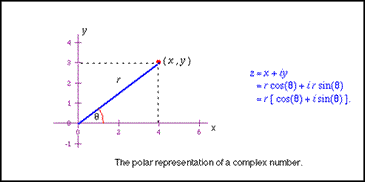

Polar Form of Complex Number
$a+b\i=x+y\i$
$\table =r(\cosθ)+(r\sinθ)\i; = r(\cosθ+\i\sinθ); =r\cisθ$
Convert Complex #s to Polar Form
Graph $4+3\i$ & express it in polar form...
| $\table r=√{4^2+3^2}; r=√{25}; r=5$ |  |
| $\table θ=\tan^{-1}(y/x); θ=\tan^{-1}(3/4); θ≈36.87°$ |
$\table x+y\i=r(\cosθ+\i\sinθ); 4+3\i=5(\cos36.87°+\i\sin36.87°); 4+3\i=5\cis36.87°$
Express $4\cis({-π})/6$ as a complex #...
Express $4\cis({-π})/6$ as a complex #...
| $4\cis({-π}/6)=4(\cos{-π}/6+\i\sin{-π}/6)$ | |
| $x=r\cosθ$ | $y=r\sinθ$ |
| $x=4\cos(-{π}/6)$ | $y=4\sin(-{π}/6)$ |
| $x=4({√{3}}/2)$ | $y=4(-1/2)$ |
| $x=2√{3}≈3.46$ | $y=-2$ |
| $x+y\i=2√{3}-2\i$ | |